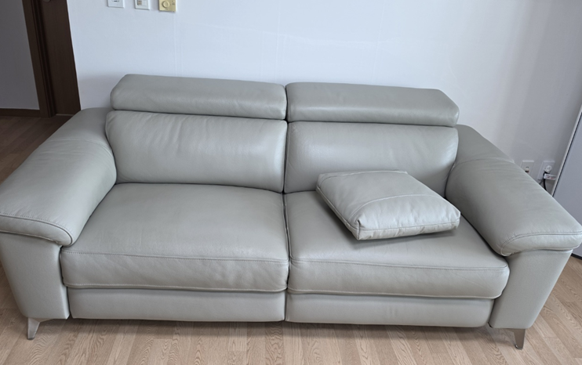
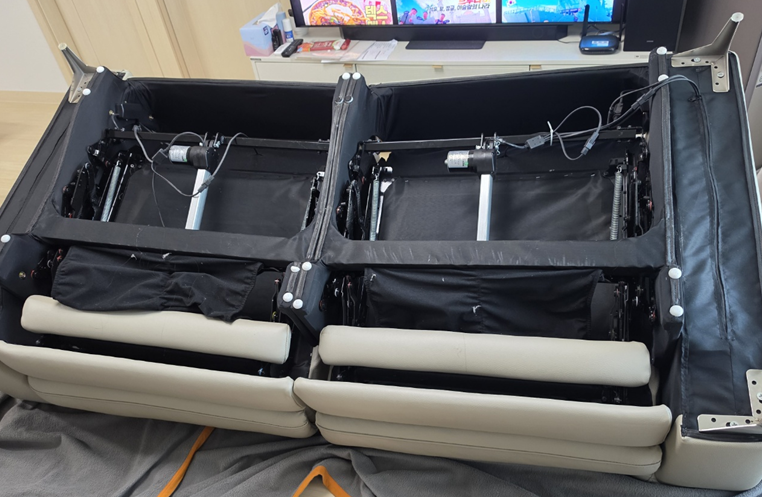
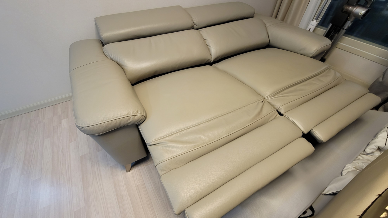
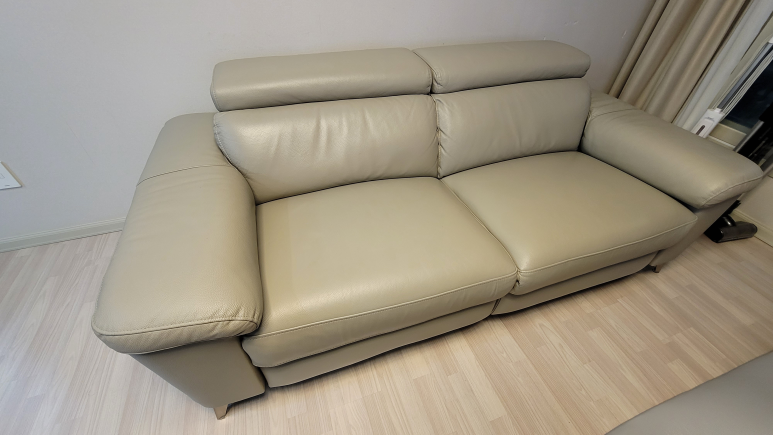
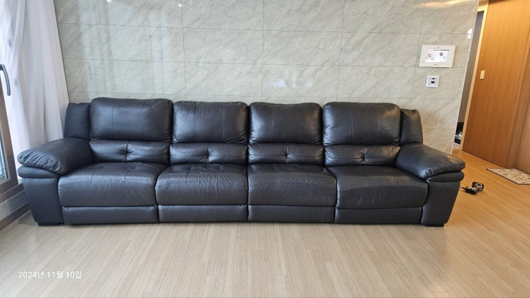
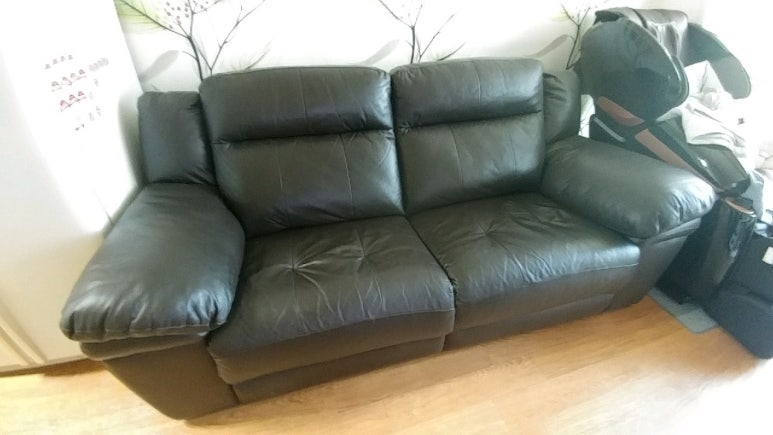
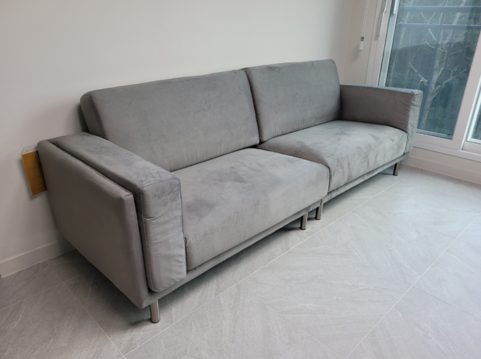

한샘 소파 이전설치
리클라이너 분리부터 재설치까지
무겁고 큰 한샘 소파, 특히 전동 리클라이너는 그냥 들어서 옮기기 어려워요. 코니처는 한샘 소파와 리클라이너를 분리해서 옮기고, 새 집이나 다른 방에서 다시 연결해 설치해 드려요. 소파 작업도 평균 10년 이상 가구를 옮겨 온 지역 기사님이 직접 방문해서 해요.

한샘 소파·리클라이너 이전설치
1인 기준 8만 원부터
표시된 금액은 최소 시작 금액이에요. 가구 크기와 수량, 이전 거리, 층수, 엘리베이터 사용 여부 등 작업과 현장 상황에 따라 금액이 달라져요. 정확한 금액은 사진을 보고 문자로 안내드려요.
현금가 기준이며, 카드 결제나 현금영수증이 필요하면 부가세가 별도예요.
문자 상담 신청하기한샘 리클라이너 소파, 옮길 때 살펴야 할 것
한샘 리클라이너 소파는 겉보기엔 한 덩어리지만, 안쪽에 모터와 접이식 발판, 전원선이 들어 있어요. 그래서 옮기기 전에 확인할 부분이 있어요.
- 전동 장치와 전원선전동 리클라이너는 좌석마다 모터와 배선이 연결돼 있어서, 분리하고 다시 연결하는 과정이 필요해요.
- 등받이와 모듈 분리모델에 따라 등받이를 빼거나 좌석 모듈을 나눌 수 있어요. 나눠서 옮기면 부피가 줄어들어요.
- 현관과 방문 폭3인, 4인 소파는 길이가 길어서 현관이나 엘리베이터를 지나기 어려울 때가 있어요.
- 가죽과 패브릭 표면가죽은 긁힘에, 패브릭은 오염에 약해서 운반할 때 표면을 감싸서 옮겨요.
한샘 소파 이전설치 과정
-
분리
전원을 빼고, 모델에 맞게 등받이나 좌석 모듈을 분리해요.

-
포장과 운반
분리한 소파를 감싸서 새 자리로 옮겨요. 이사도, 거실에서 방으로 옮기는 방간이동도 가능해요.
-
재연결과 설치
새 자리에서 모듈과 등받이를 다시 연결하고, 전동 리클라이너는 전원을 연결해요.
-
작동 확인
리클라이닝이 제대로 펴지고 접히는지 확인한 뒤 마무리해요.

소파 작업 순서와 방법은 소파 모델과 현장 상황에 따라 기사님과 상담 후 진행돼요.
현관이나 방문을 지나기 어려울 때
소파가 현관이나 방문을 통과하지 못할 것 같아 걱정되신다면, 먼저 소파의 가로·세로·높이와 문 폭을 재서 보내주세요. 등받이나 모듈을 분리하면 통과할 수 있는 경우도 있고, 분리가 어려운 모델도 있어요. 사진과 치수를 보고 가능한 방법을 상담해 드려요.
소파 견적, 이것만 보내주세요
- 소파 전체 사진정면 한 장, 옆면이나 뒷면 한 장을 찍어 주세요. 리클라이너라면 발판을 편 모습도 좋아요.
- 몇 인용인지, 전동인지1인·2인·3인·4인 중 어떤 소파인지, 전동인지 수동인지 알려주세요.
- 이사 정보지금 사는 곳과 옮길 곳, 거리, 층수, 엘리베이터 사용 가능 여부를 알려주세요.
- 통로 치수현관과 방문 폭을 알면 미리 확인할 수 있어요.
소파 옮기기 전 준비
소파 위 쿠션과 담요, 등받이 뒤에 둔 물건은 미리 치워 주세요. 전동 리클라이너는 발판을 접어 둔 상태로 두시면 분리를 바로 시작할 수 있어요. 새 집에서는 콘센트 위치를 확인해 두시면 전동 소파를 놓을 자리를 정하기 쉬워요. 이삿짐 업체와 같은 날 진행한다면 시간 순서를 상담할 때 함께 말씀해 주세요.
소파 이전설치가 필요한 경우
새 자리에 놓인 소파




최근 한샘 소파·리클라이너 작업 지역
소파 이전설치도 서울·경기·인천 수도권 전역으로 출장해요.
- 동작 → 동탄한샘 4인 리클라이너 소파 · 이사 이전설치
- 왕십리한샘 리클라이너 · 이동 이사
- 죽전한샘 키안티 3인 리클라이너 · 이동 이사
- 일산 주엽한샘 키안티 3인 리클라이너 · 이전설치
- 광진한샘 리클라이너 · 이전설치
- 과천한샘 키안티 3인 리클라이너 · 방간이동
- 군포 산본한샘 키안티 3인 리클라이너 · 이전설치
- 안양한샘 리클라이너 · 방간이동
- 강동 천호한샘 소파 · 분해 재조립 이사
자주 묻는 질문
전동 리클라이너도 옮길 수 있나요?
네, 전동 리클라이너도 작업해요. 모델에 따라 분리 방법이 달라서 사진을 보고 안내드려요.
소파를 옮기는 날 설치까지 끝나나요?
네, 옮기는 날 새 자리에 바로 설치할 수 있어요. 소파 개수와 거리에 따라 시간은 상담할 때 정해요.
소파 하나만 옮겨도 되나요?
네, 소파 하나만 옮기는 것도 가능해요. 다른 가구와 함께 옮기시면 함께 상담해 드려요.
한샘 말고 다른 브랜드 소파도 되나요?
다른 브랜드 소파도 문의하실 수 있어요. 소파 사진과 브랜드를 함께 보내주세요.
소파 이전 비용은 몇 인용인지에 따라 달라지나요?
몇 인용인지, 전동 리클라이너인지, 이동 거리와 층수, 엘리베이터 여부에 따라 달라져요. 소파 사진과 지역을 보내주시면 금액을 안내드려요.
소파 이전설치 견적 문의
소파 정면 사진과 몇 인용인지, 이사 갈 지역을 보내주세요. 아침 7시부터 저녁 6시까지 문자를 확인해요.
문자 상담 신청하기